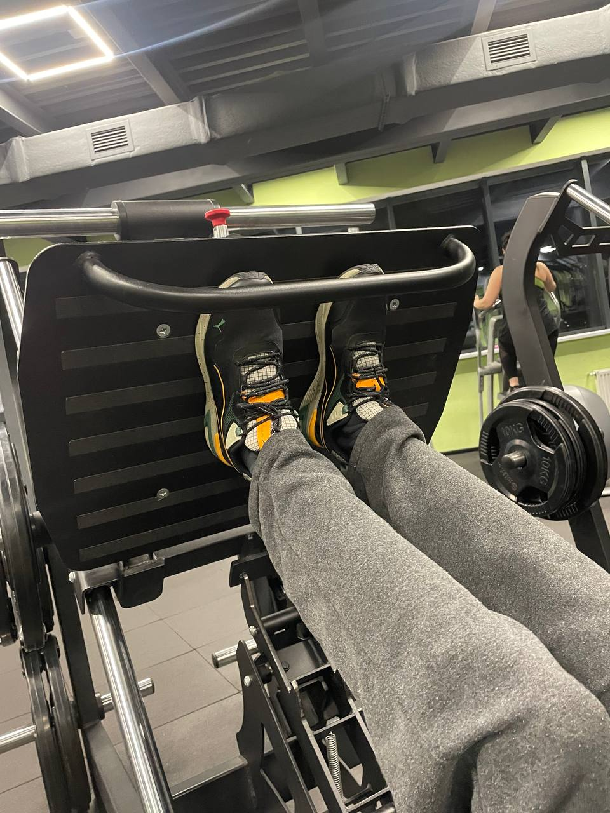

Есть за 2-5 часов до тренировки, оптимально где-то за 2.5. Если будет комфортнее, например, за 3-3.5 часа - можно делать так на постоянной основе.
Единственная комбинация, которую нельзя 2 дня подряд - руки, и потом дельты. 3 дня подряд нежелательно. 4 раза за 5 дней - ок; на регулярной основе например вт-ср-сб-вскр ок.
Слабо/т.п. себя чувствую, но прийти хочу - прийти ок, пропустить ок.
"Не поднимать (не зажимать) плечи" - универсальная рекомендация на все упражнения.
При жиме гантелей (на грудь или передние дельты) и в других упражнениях существенно важно, чтобы голова/шея не поднималась.
Не пить кофе в течение часа до и в течение часа после тренировки.
Если не сделал часть тренировки - потом не доделывать, просто пропустить; если сделал часть тренировки, прервался на час - потом не доделывать.
1. Разминка, по 5-10 повторений.
2. Пресс прямой. 3 подхода по 20 раз. Лучше под углом поднимать; дыхание четверной цикл: вверх - выдох, опускаю МЕДЛЕННО - вдох, выдох, сгибаю в коленях вдох; пресс держать напряженным все время, чтобы поясница меньше подключалась. Положение скамьи: см. фото. Важно, чтобы шея не напрягалась - для этого держаться крепче руками или т.п.; головой упираться или нет - по желанию.


3. Пресс боковой. 3 подхода по 15 раз на обе стороны. Выдох при скрутке, вдох при возвращении в прямое положение. Ноги приподняты и фиксированы. Что "пресс на чувствую" - пофиг. Динамичнее делать чем на видео или нет? Блин держу так, чтобы кисти были на диаметре (см. фото).
4. Пресс боковой №2 (можно/нужно в суперсете с предыдущим). Подбородок смотрит на потолок, поворачиваю только гр. клетку (как на видео), дыхание стандартное (выдох при движении в сторону; не забываю!), пятку касаюсь, ноги не ставлю ближе чем на видео (?).
5. Альтернативный пресс прямой+боковой (мне вроде подходит меньше) - 3 подхода по 15 тройных раз. Ногами цепляюсь, таз опускаю низко для устойчивости, низко не опускаюсь (см. видео). Положение платформы - самое высокое. Лучше убрать блин (можно в процессе упражнения), чтобы сделать 10 повторений, чем сделать с блином, но меньше.
Сначала 1-3; потом 4; потом 5-6 (суперсет), 7-8 (суперсет)
1. Кисти "прямо", но так, чтобы локоть оставался "опущенный" в нижней точке (?) (см. фото); указ. палец на крайней выемке (?) (см. фото); таз прижат к спинке, спина прогнута, грудь наверх, лопакти свожу, поднимаю офк на выдохе, не выравниваю локоть вверху; полож. см. фото


2. Бабочка для груди. Таз вперед, грудь раскрыта, лопатки свожу, положение 3 (во всех 3-х штуках, где можно менять положение). Амплитуда и угол в локте см. видео. И там еще какая-то фигня с тем, чтобы по одной палке опускать при завершении подхода. На 2-м видео штука под спину стоит не в том положении.
3. Гантели над грудью (не подтягивать к лицу и не уводить в стороны), таз прижат, прогиб в спине, лопатки свожу, положение №4 (и среднее у другой ручки)
4. Руки широко, таз выше, локти в стороны (?)
5. Локти фиксированы, небольшой наклон вперед, полож. ног - не прям впритык (см. фото), разгибаю не полностью, на себя - быстро, но плавно; рукоятку держу на изгибе (?).

6. Стою почти впритык (см. фото), без наклона, локти в стороны (см. видео), внизу небольшую паузу (см. видео), плечи офк не поднимаю. Медленно (!) и поднимаю, и опускаю (но на видео опускаю быстро...).
7. Сгибаю полностью, разгибаю не полностью, гантели при подъеме поворачиваю, чуть-чуть наклон вперед, помнить про дыхание (выдох, когда на себя), поднимаю быстро, но плавно (?).
8. Фр. жим. Локти фиксированы! Локти не свожу, локти в стороны (см. видео). Медленно (!) и поднимаю, и опускаю. Не забываю про дыхание. В нижней точке гантели за головой и очень близко друг к другу (?) (см. фото).

1. Подтягивание на платформе. Положение рук - на дальней рукоятке, но макс. узкое (да?). Грудь вверх, лопакти свожу, вот это все. "Должно быть ощущение, что рукоятку, за которую держусь, тяну на себя, будто хочу ее согнуть".
2. Вниз - максимально растянуть, вверх - приподнять грудную клетку, ближние края гантели чуть уже дальних, кисть веду по тазовой кости ("тяга дугой"); положение скамьи №3 (между упр. на грудь (№4) и упр. на передние дельты (№2))

3. Смотреть прямо, плечи не поднимать, грудную клетку наверх, амплитуда - макс. растяжение спины (?); как и везде, вниз быстро, вверх медленнее. Положение штуки над коленями - самое низкое.
4. Тяну к тазу; к себе быстро, назад - медленно; амплитуда, положение - см. видео (к тазу макс., обратно - совсем чуть наклоняюсь).
5. Грудь вперед (наверх), лопакти свожу (?), локти макс. узко (!), плечи не поднимаю, руки держу на конце палок (см. видео), положение - 2-е снизу
6. Локоть веду по 1 линии [с плечом], грудь наверх, лопатки свожу (?). Обе штуки на 3-ю позицию. Положение кистей см. фото (указ. палец на верхней выемке).

7. 3 раза по 20, можно с весом, в ОБЕ стороны медленно, положение №3 от стенки, после (!) пресса. Если забыл, можно в другой день, по кр. мере в день дельт. Если последний подход с блином сложно, то лучше без блина, но 20 раз (блин можно убрать во время подхода).
1 (передние), 2-3 (средние), 4-5 (задние). 2-3 рядом, 4-5 рядом.
1. Прогиба в спине нет; локоть смотрит вперед (угол 135 градусов, "по диагонали"); вверху выдох не забывать. Скамья - см. фото (№2 + среднее).
1'. Альтернативный вариант на тренажере (вместо (1)). Положение скамьи см. фото., локоть не увожу в сторону, кисть лежит см. видео; кисть изгибаю не супер мега, а чтобы рукоятка лежала на ладони (см. фото).


2. Дельта-машина: положение скамьи №2 (см. фото) (так, чтобы рукоятка была чуть выше локтя), положение рук см. фото, спину расправить см. фото, поднимаю максимально высоко, потом, когда тяжело, до уровня плеча; вверх - выдох, вниз - вдох (стандарт).


3. Вверх - быстро; плечи не поднимать; локоть вперед (?); локоть повыше (?); лопатки свести (?); корпус не уводить вперед; опускаю (разгибаю локоть) немного не до конца; можно со штангой (см. 3').
3'. То же, что с гирей, но со штангой (см. видео). Полож. рук см. фото (указ. пальцы за пол (?) пальца до конца серебристости (?))

4. Бабочка для спины. Положение скамьи 3, подушка самая далекая, палки макс. сведены. Кисти "вывернуты", руки в локтях чуть согнуты; плечи не поднимаю, локти не опускаю (если не могу, то лучше опустить локти, чем поднять плечи; плечи не поднимать!), амплитуда см. видео, рукоятками не стукаем (сводим не полностью).
5. Могу отклоняться или даже упираться ногой в тренажер; положение кистей см. фото; плечи не зажимаю (не поднимаю); большой палец смотрит вниз, локоть на одной линии с плечом (не опускать!), спину "уводим назад".
Желательный порядок: сначала 1 (пока не усложнил, не обязательно первым, можно и в конце); потом 2-3 (суперсет), 4, 5; потом 6, 7-8 (суперсет); 2-8 можно и в другом порядке; потом 9; потом пресс (без бокового, где ноги в воздухе?) по желанию. Если слишком много, можно что-то одно из 6, 7-8, 9 не делать (разное в разные дни), либо не делать пресс (ок вариант).
В день ног не сидеть между подходами.
1. Коорд. на платформе. 2 (?) по 20 приседаний. Носки широко (см. фото). Чтобы встать, беру шнур, потом отпускаю. В дальнейшем - на одной ноге в центре платформы (пока не могу). Приседаю достаточно низко.
2. Сведение. Свожу полностью, развожу полностью. Таз прижат в спинке (?). Делаю одинаковое (16-20) число повторений на каждом подходе. Ноги на верхней штуке.

3. Разведение. Свожу НЕ полностью, расстояние размером в стопу+ оставляю; развожу полностью. Таз прижат в спинке (?). Делаю одинаковое (16-20) число повторений на каждом подходе. Ноги на верхней штуке.
4. Разгибание. Положение стоп аналогично положению при разгибании (см. фото): носки на себя, смотрят чуть друг на друга, ноги пошире (?); полож. красного рычага 3-е (см. фото) - таз чуть недостает, но сидение до колен доходит; полож. черной хрени - самое плотное.


5. Сгибание. Стопы см. фото; рычаг в крайнем положении (черная штука макс. низко); положение на скамье см. фото; полож. красной штуки №2 (см. фото); стопы важнее держать так при сгибании (?), чем при разгибании (очевидно); до конца не разгибаем.
6. Жим ног с широкой посадкой. Положение ног - 2 варианта: (1) сильно вылазят за пределы платформы (так не делаю, т.к. кажется, что ноги могут сорваться), см. видео + 2 фото; (2) почти полностью на платформе, см. видео и фото; видео и фото варианта (2) идут раньше. Положения всего остального см. еще 3 фото. Таз прижат к спинке, колени разводим см. видео, на отжиме давлю в пятку; платформу опускаю, насколько хватает растяжки. Напрягать пресс в активной фазе!
6'. Жим ног с узкой посадкой (на квадрицепс). Пока не делаю. Таз прижат, полож. ног см. фото, полож. скамьи и платформы см. фото, колени не развожу (можно вообще вместе), амплитуда маленькая (колени упираются в грудь), выжимаю резко, обратно плавно. Напрягать пресс в активной фазе!


7. Приседание с платформой. Положение ног: линия носков - см. фото; чем уже, тем сложнее, мне сейчас делать как на фото. Полож. скамьи см. фото. Вверх быстро (?), опускаю медленно и весомо низко (мб даже чуть ниже прямого угла; лучше с меньшим весом, чем приседать менее низко), когда поднимаюсь - напрягаю пресс (!), чтобы нагрузка не переходила на поясницу. Стопы и колени - прямо.

8. Приседаю по 10 раз широко (колени в стороны при приседании), средне, узко. Прожимаю квадрицепс при подъеме.
9. Выпады. 4 подхода, 1 подход - от турников до ступенек в одну сторону (где-то 22 шага?); отдыхать дольше 1-2 минут ок; колено и пятка на одной линии (!!!); коленом касаться пола не обязательно (?); давлю в пятку при подъеме и через пятку опускаюсь.